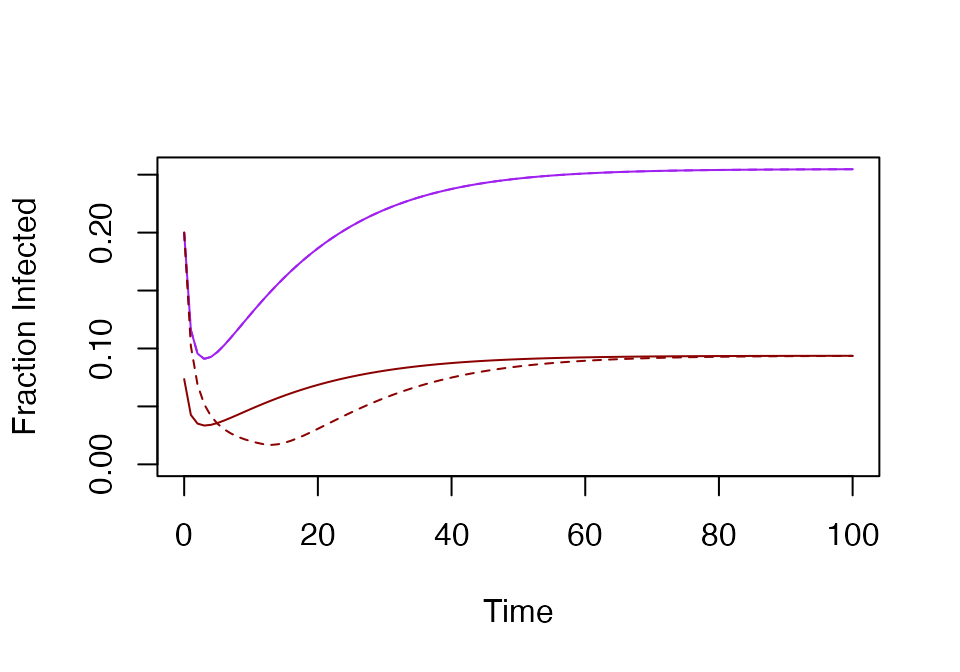

\(\oplus\)
The basic mosquito models in ramp.xds
are variants of George Macdonald mathematical models, developed with
help from P. Armitage. The variables for all the models in
ramp.xds are mosquito densities, and the
default model is from Aron & May, 1982.
George Macdonald
George Macdonald’s papers published from 1952 transformed the quantitative study of medical entomology and malaria transmission by mosquitoes:
1952 - The analysis of the sporozoite rate presented a formula for the sporozoite rate. Macdonald’s analysis demonstrated the importance of mosquito survival.
1952 The analysis of equilibrium in malaria introduced the basic reproduction rate of malaria with a compact set of parameters.
Macdon In Macdonald’s notation (and some of his words):
\(m=\) the ratio of anopheline vectors to humans
\(a=\) the average number of humans bitten by one mosquito in one day.
\(b=\) the proportion bites by infectious mosquitoes that cause an infection.
\(p=\) the probability a mosquito surviving through one whole day.
\(n=\) the time taken for completion of the extrinsic cycle
The mathematical models that are now commonly called the Ross-Macdonald model typically combine Ronald Ross’s model for human infections, an SIS compartmental model, with an SEI model for mosquito infections. As a differential equation, Macdonald’s model was almost certainly a delay differential equation.
ramp.xds has adopted as its default
model (MYZname = "RM") a set of equations published by Joan
Aron and Bob May in 1982. In the following, we discuss models for
mosquito ecology and infection dynamics in
ramp.xds
RM
Let \(M\) denote the density of adult mosquitoes, \(\Lambda(t)\) the emergence rate of adult mosquitoes from aquatic habitats, and \(g\) the adult mosquito mortality rate. Mosquito population density is described by an equation:
\[\frac{dM}{dt} = \Lambda(t) - g M\] If \(\Lambda\) is constant, then the equation has a steady state:
\[\bar M = \Lambda/g\]
The dynamics of infection depend on a quantity that we will call \(\kappa(t)\) denoting the net infectiousness (NI) of humans, or the probability a mosquito becomes infected after blood feeding on a human. Let \(f\) denote the overall blood feeding rate, and let \(q\) denote the fraction of blood meals on humans (a.k.a the human fraction). Let \(Y\) denote the density of mosquitoes that are infected with parasites, and its dynamics are described by:
\[\frac{dY}{dt} = fq\kappa(M-Y) - gY\] Let \(Z\) denote the density of mosquitoes that have sporozoites in their salivary glands, and let \(\tau\) denote the time elapsed between the blood meal that infects a mosquito and the point in time when a surviving mosquito has sporozoites in its salivary glands. The probability a mosquito has survived \(\tau\) days is \(e^{-g\tau}\), and we let a subscripted \(\tau\) denote the value of a variable at time \(t-\tau.\) The density of infectious mosquitoes is modeled by:
\[\frac{dZ}{dt} = e^{-g \tau} fq\kappa_\tau(M_\tau-Y_\tau) - gZ\] If \(M\) and \(\kappa\) have reached the steady state, then the fraction of infected mosquitoes, \(y=Y/M\) is given by:
\[y = \frac{fq\kappa}{g+fq\kappa}\]
and the fraction of infectious mosquitoes (i.e. with sporozoites in their salivary glands), is called the sporozoite rate,
\[z = e^{-g\tau} \frac{fq\kappa}{g+fq\kappa}\] This is equivalent to Macdonald’s formula.
In ramp.xds this set of equations is
implemented. This sets up and solves a model with \(\kappa\) and \(\Lambda\) passed as constant values, and a
human population density of \(H=10.\)
rm = xds_setup(Xname = "trivial", Xopts = list(kappa=0.1), Lname = "trivial", Lopts = list(Lambda=5), HPop=10)
rm = xde_solve(rm, Tmax=100)
xds_plot_M(rm)
xds_plot_YZ(rm, add_axes=FALSE)Macdonald’s Formula
If we wanted to replicate Macdonald’s equations, we would let \(a=fq\), \(p = e^{-g}\) or equivalently \(g = -\ln p\), \(\kappa = x,\) and \(n=\tau\) so:
\[e^{-g\tau} \frac{fq\kappa}{g+fq\kappa} = p^n \frac{ax}{ax - \log_{e}p}\]
Spatial Dynamics
ramp.xds can also model mosquito
spatial dynamics, as described in Spatial
Dynamics of Malaria Transmission (2023) PLoS Computational
Biology. In the spatial formulations, a landscape is
sub-divided into a set of \(n_p\)
patches. The variables \(M\) and \(Y\) and \(Z\) are vectors of length \(n_p,\) and the paramger \(g\) is replaced by a mosquito demographic
matrix \(\Omega\) that describes
dispersal. The matrix \(\Omega\)
combines several parameters:
\(g\) - a vector describing patch-specific dispersal
\(\sigma\) - a vector describing patch-specific emigration rates
\(\mu\) - a vector describing the fraction of mosquitoes lost through migration, including mortality and dispersal out of the system
\(\cal K\) - a dispersal matrix
\[\Omega = \mbox{diag}\left(g\right) - \left[\mbox{diag}\left(1-\mu\right)-{\cal K} \right] \cdot \mbox{diag}\left(\sigma\right)\]
Variants
ramp.xds also includes two variants of
Macdonald’s model:
siis a simpler version of the model aboveseiis a compartmental model
si
A simple variant of Macdonald’s model ignores the delay for the EIP. The equation for \(M\) and \(Y\) are as above, but
\[Z = e^{-g\tau} Y\]
si = xds_setup(MYZname = "si", Xname = "trivial", Xopts = list(kappa=0.1), Lname = "trivial", Lopts = list(Lambda=5), HPop=10)
si = xde_solve(si, Tmax=100)
xds_plot_YZ_fracs(si)
xds_plot_YZ_fracs(rm, add_axes=FALSE, llty=2)
sei
In a model that is equivalent to the standard SEI compartmental model (under a change of variables), the equations for \(M\) and \(Y\) are as above, but the fraction infectious is:
\[\frac{dZ}{dt} = (Y-Z) / \tau - g Z\]
sei = xds_setup(MYZname = "sei", Xname = "trivial", Xopts = list(kappa=0.1), Lname = "trivial", Lopts = list(Lambda=5), HPop=10)
sei = xde_solve(sei, Tmax=100)
xds_plot_YZ_fracs(rm, llty=2)
xds_plot_YZ_fracs(sei, add_axes=FALSE)
Comparing Models
clrs = turbo(4)[-2]
xds_plot_Z_fracs(rm, Zclrs=clrs[1])
text(80, 0.15, "RM", col = clrs[1])
text(80, 0.11, "si", col = clrs[2])
text(80, 0.07, "sei", col = clrs[3])
xds_plot_Z_fracs(si, add_axes=FALSE, Zclrs = clrs[2])
xds_plot_Z_fracs(sei, add_axes=FALSE, Zclrs = clrs[3])
Lo = list(season = function(t){1+sin(2*pi*t/365)},
trend = function(t){exp(-t/1000)},
Lambda =5)
rm = xds_setup(Xname = "trivial", Xopts = list(kappa=0.1), Lname = "trivial", Lopts = Lo, HPop=10)
rm <- xde_solve(rm, 3650, dt=10)
xds_plot_M(rm)